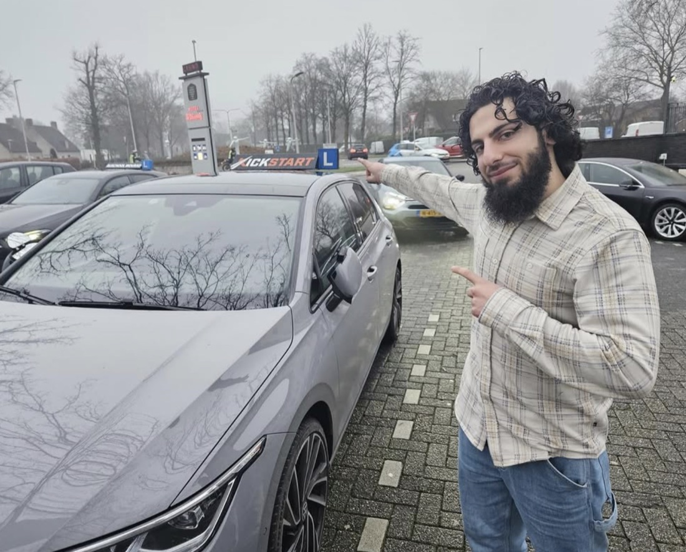
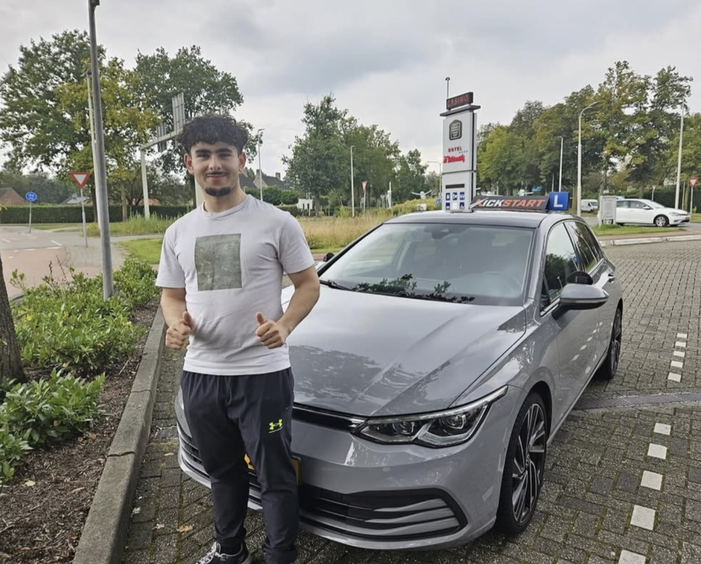
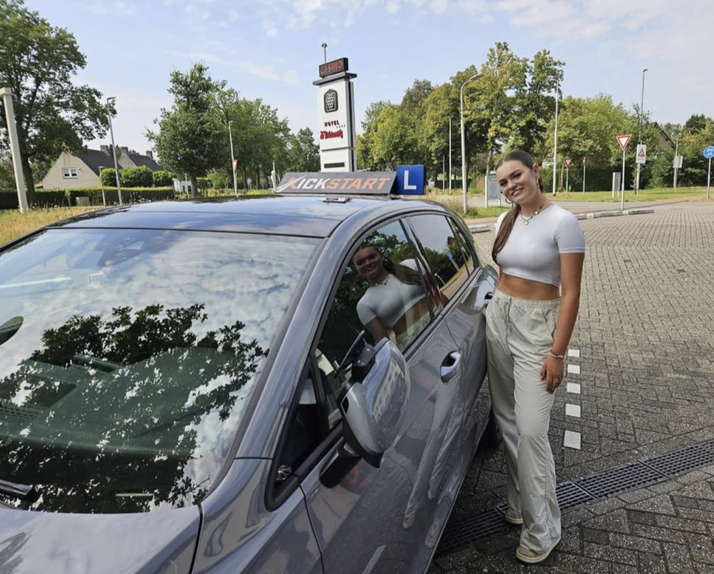
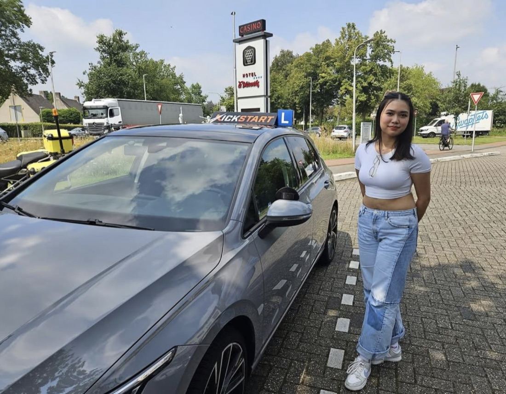
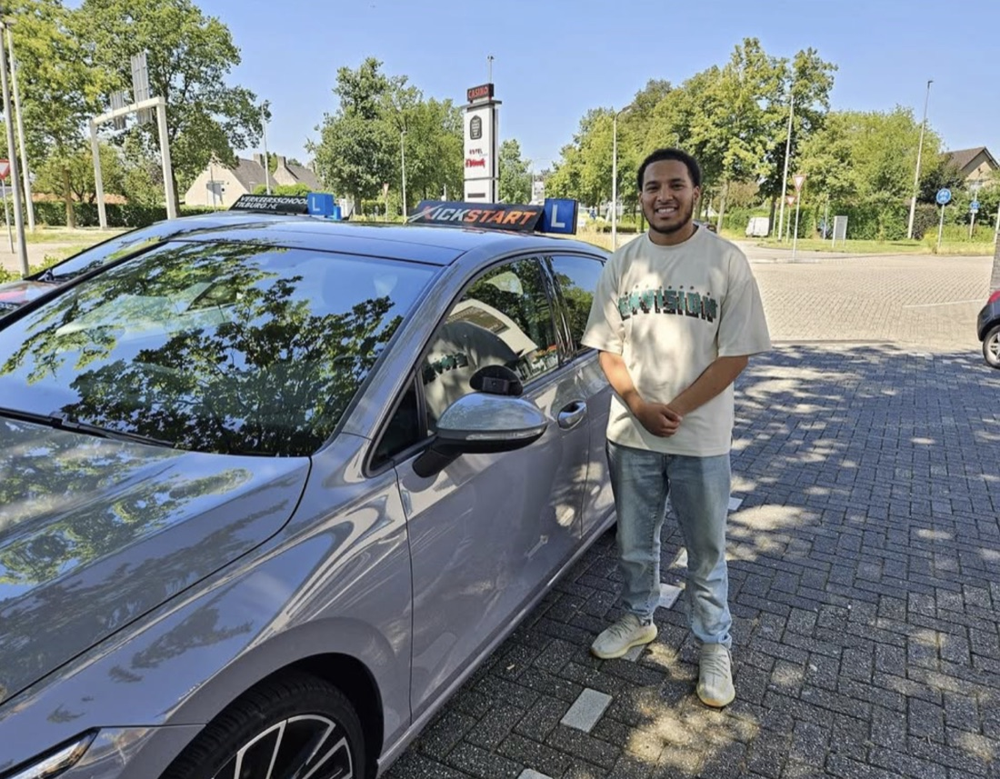
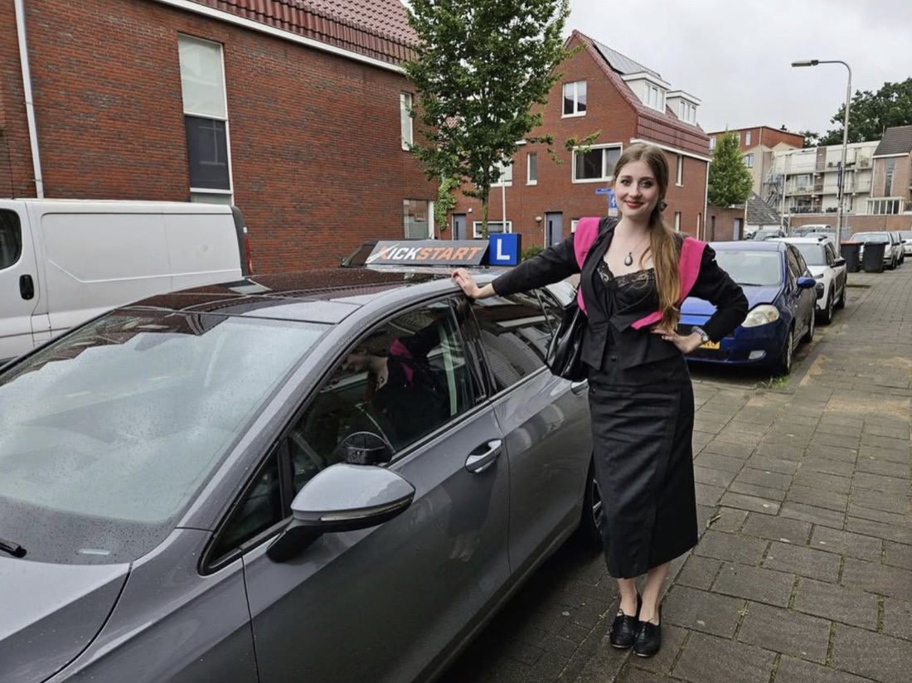
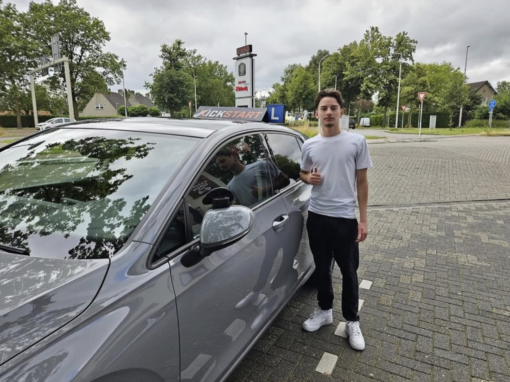
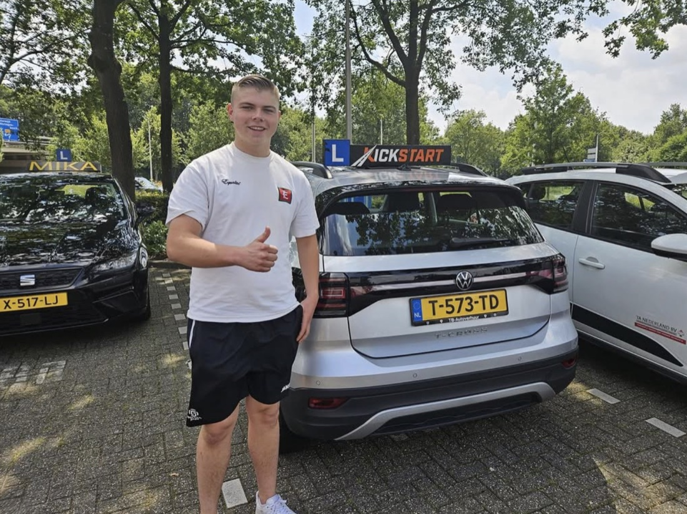
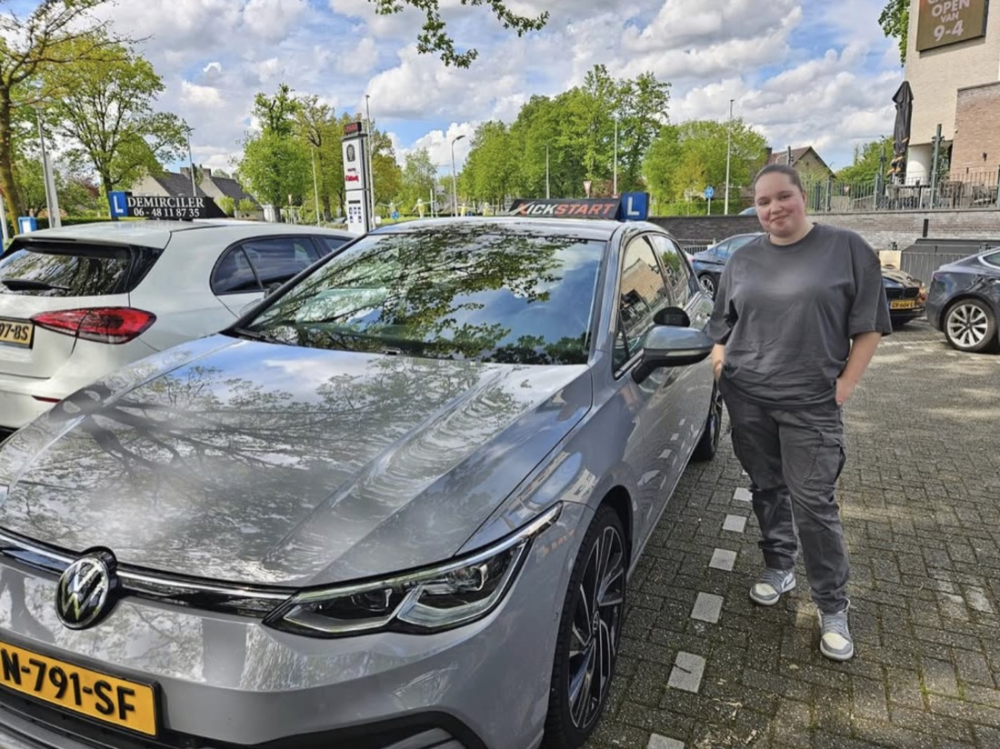
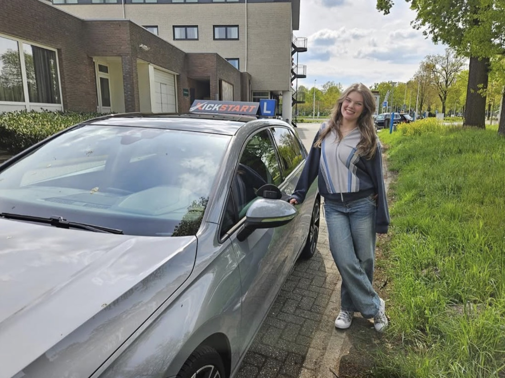

Ik heb een hele fijne ervaring gehad bij rijschool Kickstart! Bekir is duidelijk in de communicatie, het maken van afspraken en reageert snel. Daarnaast waren de lessen altijd fijn en leerzaam. Bij fouten werd op een fijne en rustige manier uitgelegd hoe het volgende keer beter kan.
Reviews & geslaagden
Honderd zes keer vijf sterren
Elke review hieronder staat letterlijk zo op Google. Lees waarom leerlingen uit Tilburg en omgeving steeds hetzelfde schrijven: volledige aandacht, rust in de auto en snel resultaat.
5,0
★★★★★
Bekijk alle reviews op Google
Gemiddelde van 106 Google-reviews. Geen enkele beoordeling onder de vijf sterren.
Uitgelicht
In hun eigen woorden
“Ik heb het ervaren als samen naar een doel toewerken, met humor en positieve feedback over wat je fout doet. Ook super fijn dat je rijlestijd volledig voor jou is, geen gedoe met andere leerlingen ophalen of afzetten! Volledige aandacht en focus op jouw proces.”
“Ik heb te maken gehad met meerdere rijinstructeurs, maar heb nooit iemand zo fijn gehad als Bekir. Ik begon als een leerling zonder zelfvertrouwen, maar ben nu een bestuurder met veel zelfvertrouwen en heb hierdoor ook moeiteloos mijn examen gehaald.”
“Bekir wist precies hoe hij me kon begeleiden en aanmoedigen, zelfs op de momenten dat ik onzeker was. Zijn geduld en gedetailleerde uitleg hebben me geholpen om zelfverzekerd achter het stuur te zitten. Ik slaagde voor mijn rijexamen en ik weet dat ik dat te danken heb aan de kwaliteit van de lessen.”
“Absolutely amazing time with Bekir! My Dutch is still improving and he was very accommodating and very precise and knowledgeable about exactly what is expected from CBR. Go with Kickstart!! Passed first time!!!”
“Ik heb altijd veel gedoe gehad bij een andere rijschool, maar toen ik eenmaal bij Kickstart zat was dat allemaal verdwenen en werd ik professioneel behandeld. Ondanks alle drukte weet Bekir altijd wel een gaatje te vinden voor je. P.s. je rijdt nog in een mooie auto ook.”
De geslaagden-muur
Zij haalden hun vliegende start
Een greep uit de leerlingen die bij Kickstart hun rijbewijs haalden, gefotografeerd bij de lesauto na hun examen.















De muur
Lees ze allemaal
Vijftig reviews, woord voor woord overgenomen van Google. De rest lees je via de reviewknop hierboven.
Ik zat eerst bij een andere rijschool, toen ben ik naar Bekir gegaan. Dat was echt mijn beste keuze ooit. Ik heb gehaald, 1x examen gelijk geslaagd. Complimenten naar Rijschool Kickstart.
Met veel plezier op mijn 31e mijn rijbewijs hier gehaald. Bekir stelt je op je gemak, bouwt samen de basis van het rijden op en helpt je met je zwakke punten. Ik heb het ervaren als samen naar een doel toewerken, met humor en positieve feedback over wat je fout doet. Prijzen zijn goed, met één herexamen in ongeveer 40 lessen gehaald! Ook super fijn dat je rijlestijd volledig voor jou is, geen gedoe met andere leerlingen ophalen of afzetten! Volledige aandacht en focus op jouw proces.
Absolutely amazing time with Bekir! My Dutch is still improving and he was very accommodating and very precise and knowledgeable about exactly what is expected from CBR. Go with Kickstart!! Passed first time!!!
Fijne rijschool en instructeur!!! Ik beveel deze rijschool zeer zeker aan voor kwaliteit, duidelijkheid en voor de lesstof. Heel erg bedankt voor de lessen, uitleg en natuurlijk de gezelligheid.
Dank je wel Bekir voor de top service die je geeft. Geen druk, gewoon ontspannen lessen bij jou. Je behandelt mensen met respect en geeft ze het juiste advies wat nodig is. Kan niets anders zeggen dan top!!!
Super goede en chille rijinstructeur. Erg een aanrader.
Ik heb mijn rijbewijs in één keer gehaald dankzij Bekir. Hij is een topinstructeur: altijd op tijd, vriendelijk en geduldig. Hij legt de dingen heel duidelijk uit en heeft een rustige aanpak. Zelfs als ik iets niet begreep, nam hij de tijd om het opnieuw uit te leggen. De lessen waren altijd ontspannen en leerzaam. Daarnaast heeft hij een fijne auto en zijn de prijzen zeer schappelijk. Ik kan hem van harte aanbevelen aan iedereen die in de buurt van Tilburg woont!
Dit is de beste rijschool die ik me had kunnen wensen bij het halen van mijn rijbewijs. De instructeur legt alles duidelijk uit en neemt echt de tijd met veel geduld.
Rijschool Kickstart is een hele dikke aanrader!! Bekir, de instructeur, is super relaxed in zijn manier van lesgeven waardoor het bij mij veel beter ging qua leren. Altijd gezellige lessen gehad en ondanks alle drukte weet Bekir altijd wel een gaatje te vinden voor je. Ik heb altijd veel gedoe gehad bij een andere rijschool maar toen ik eenmaal bij Kickstart zat was dat allemaal verdwenen en werd ik professioneel behandeld. Kortom een dikke aanrader!! P.s. je rijdt nog in een mooie auto ook.
Bekir is een hele fijne rijinstructeur. Hij is heel professioneel, eerlijk en laat alles goed en duidelijk zien. Hij neemt altijd zijn tijd met dingen uitleggen en laten zien. Bekir komt altijd op tijd en benut jouw rijles ook goed. Andere leerlingen halen jou niet op en je hoeft leerlingen ook niet thuis op te halen of af te zetten. Ik heb te maken gehad met meerdere rijinstructeurs, maar heb nooit iemand zo fijn gehad als Bekir. Ik heb veel zelfvertrouwen gekregen op de weg door de rijlessen van Bekir. Ik begon als een leerling zonder zelfvertrouwen, maar ben nu een bestuurder met veel zelfvertrouwen en heb hierdoor ook moeiteloos mijn examen gehaald. Echt een aanrader!
Prettige leservaring! Duidelijke en geduldige uitleg, altijd een relaxte sfeer en een goed verzorgde auto. Ook heel fijn dat er tijdens de lestijd geen andere leerlingen worden opgehaald of weggebracht, zo konden we optimaal examenroutes oefenen. Bedankt!
Uitstekende rijschool!! De rijinstructeur is goed doordacht, met routes die je voorbereiden op verschillende verkeerssituaties. Ik vond het ook fijn dat ik flexibel kon plannen, wat goed uitkwam met mijn drukke schema.
Hele fijne vriendelijke instructeur. Altijd hele fijne lessen gehad. Vanaf begin voelde ik me op mijn gemak in de auto. Alles goed stap voor stap geleerd, wat voor mij nodig was. Rijles op maat.
Vanaf het allereerste contact met Kickstart voelde ik me welkom en op mijn gemak. Bekir wist precies hoe hij me kon begeleiden en aanmoedigen, zelfs op de momenten dat ik onzeker was. Hij creëerde altijd een ontspannen en vriendelijke sfeer in de auto, wat het leren des te plezieriger maakte. Bekir had een uitstekende kennis van alle aspecten van het rijden en wist dit op een duidelijke en begrijpelijke manier over te brengen. Hij gaf me vertrouwen in mijn vaardigheden en moedigde me aan om uitdagingen aan te gaan. Wat ik ook erg op prijs stelde, was dat Bekir flexibel was met het plannen van mijn lessen. Dankzij de uitstekende begeleiding van Bekir ben ik nu een zelfverzekerde en veilige bestuurder. Bekir ongelofelijk bedankt voor de fijne lessen!
Fijne rijschool die met veel geduld de student helpt. Sterk aan te bevelen voor als je nog je rijbewijs moet halen!
Hele fijne rijlessen, heel leerzaam en heel behulpzaam.
Rijschool Kickstart is een goede aanrader. Bekir is een goede en relaxte instructeur die alles op een goede en duidelijke manier uitlegt. Ik voelde me elke les op mijn gemak en de sfeer in de auto was altijd relax. Door de goede lessen en instructies ben ik geslaagd, bedankt Bekir!!
Heb altijd lol gehad met Bekir als rijinstructeur en elke les was ook nog eens zeer leerzaam. Uiteindelijk in 1x geslaagd mede dankzij de goede rijlessen die mij erg hebben geholpen!
Relaxte instructeur die zijn afspraken nakomt. Fijne gemoedelijke sfeer tijdens de lessen. Veel leuke momenten gehad, maar vooral serieus lessen. Goede prijs!! Thnx voor de hulp bij het behalen van mijn rijbewijs.
Beste rijschool!! Zeker aan te raden. Fijne en duidelijke lessen van de instructeur, super tevreden!
Bekir is een erg fijne, kalme en gezellige instructeur. Tijdens het lessen altijd gezellig kunnen kletsen en lachen, waardoor ik me goed op mijn gemak voelde. Manier van lesgeven is heel fijn en op het tempo dat bij de leerling past. Rijbewijs in één keer gehaald dankzij zijn lessen.
Beste instructeur, altijd grappig tijdens het rijden maar natuurlijk ook serieuze momenten. Goede uitleg, als je iets niet snapte herhaalde hij het opnieuw en lekker verder met rijden. Een dikke 10.
Ik raad Rijschool Kickstart zeker aan. Ontzettend geduldige en vriendelijke instructeur, die kort maar krachtig uitlegt :)
Vond het heel fijn om met jou te lessen, veel geleerd en leuke praatjes gehad. Dus zeker een goeie rijschool! Aanrader!
Bekir creëert een ontspannen sfeer in de auto en geeft duidelijke en geduldige uitleg. Hij denkt ook heel goed mee over de mogelijkheden met betrekking tot lessen en het plannen van het examen. Bovendien zorgt hij ervoor dat zijn auto altijd schoon en fris is, waardoor je je comfortabel voelt tijdens de lessen en het examen. Wat ik vooral waardeer, is dat je nooit andere mensen ophaalt of wegbrengt tijdens lessen, waardoor de lestijd optimaal benut kan worden.
Fijne rijschool, en vooral een hele gezellige instructeur die weet van zaken! Zou het zeker aan iedereen aanraden.
Hele leuke rijinstructeur, hij is super lief en heel geduldig. Zeker een aanrader om hier je rijbewijs te gaan halen!!
Een hele leerzame en goed helpende rijinstructeur! En ook nog super gezellige kilometers gemaakt. Vandaag geslaagd en erg tevreden over hoe het het afgelopen jaar is gegaan.
Bekir is een top instructeur. Erg fijne lessen gehad en mijn rijbewijs in 1x weten te behalen. Ik raad iedereen Rijschool Kickstart aan!! Thanks voor de ervaring.
Fijne rijschool en instructeur. Zelf had ik wat last van angsten op de snelweg, hij heeft ervoor gezorgd dat ik veilig en zonder angst de weg op kan!
Gezellige en lieve rij-instructeur! Nooit een saaie les gehad en Bekir past zich goed aan aan wat de leerling nodig heeft. Zeker een aanrader! En altijd een verzorgde, mooie auto :)
Vandaag ben ik in één keer geslaagd voor mijn praktijkexamen! Bedankt Bekir voor de leuke, leerzame lessen, de gezellige gesprekken en je engelengeduld.
Ik heb mijn examen in één keer gehaald! Het is een gezellige instructeur en ik heb een leuke ervaring gehad! Zeker een aanrader voor iemand die op zoek is naar een rijschool.
Na de 2de keer mijn examen gehaald. Ik heb mij altijd op mijn gemak gevoeld, waardoor de rijles heel snel voorbij ging. De uitleg was ook altijd heel duidelijk.
Echt DE beste rijschool van heel Tilburg, altijd vrolijke instructeur Bekir, hele nette en mooie auto. Goede lessen en super relaxte sfeer. Ga de lessen zelf missen!!
Na 4 keer gezakt te zijn voor mijn praktijkexamen, de overstap gemaakt naar Kickstart. Top ervaring, fijne sfeer en uitstekende instructeur. Het eerstvolgende praktijkexamen meteen geslaagd en veel bijgeleerd!
Hele goede leerzame rijschool, leuke gesprekken in de auto gehad en ben in één keer geslaagd.
Hele fijne rijinstructeur, zeker een aanrader. Hij neemt de tijd en legt alles duidelijk uit! In 1x geslaagd!!!!
Goede rijinstructeur, alleen maar leuke en leerzame lessen mee gehad. Ik raad het iedereen aan om bij Rijschool Kickstart te lessen!!
Bekir is een hele fijne en relaxte instructeur. Hij heeft mij met veel geduld door het proces heen geholpen, is altijd correct en op tijd. En nu ben ik geslaagd, houdoe en bedankt!
Super rijschool! In één keer geslaagd. Altijd super gezellig gehad tijdens de lessen en veel geleerd. Kan Rijschool Kickstart iedereen aanraden.
Hele goede rij-instructeur. Zorgt voor een fijne sfeer in de auto en maakt alle verzoeken mogelijk. Geeft duidelijke uitleg en stoomt je goed klaar voor het rijexamen. Zeker een aanrader!
Zeker een aanrader! Instructeur is erg vriendelijk en legt alles duidelijk uit. De perfecte rijschool om je rijbewijs te halen!
Goede rijschool, leuke en leerzame rijlessen.
In 1 keer geslaagd! Top rij-instructeur, duidelijke uitleg en goeie tips. Ook lekker sociaal wat de lessen alleen maar leuker maakt.
Goede rijschool, met een fijne rij-instructeur die alles goed en rustig uitlegt. Altijd een fijne en leuke rijles gehad.
Hele fijne rijinstructeur, geduldig maar toch duidelijk. In 1 keer geslaagd, dankjewel!
Beste rij-instructeur die je kan hebben!! In 1x geslaagd dankzij hem!! Twijfel niet en maak je afspraak!!
Echt een toffe rijschool en zeker een aanrader! De rijinstructeur is echt een aardige man en geeft ook duidelijke uitleg.
Een prettige ervaring en nice instructeur. Leert je alles wat je moet weten op een goede manier waardoor het bij blijft tijdens het examen. Vanaf de eerste les al een goede vibe. Geslaagd zonder enig probleem op de weg te hebben gehad. Thankssss!!!
Jouw beurt
De volgende foto
De volgende foto
is die van jou
Plan een proefles van 60 minuten en ontdek zelf waar al die vijf sterren vandaan komen. Meestal start je binnen een week.